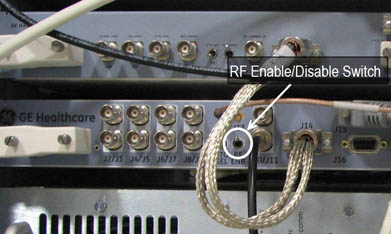

Operating Documentation
Direction 5670000, Rev# 1
Module Version 4.0, Version Date 5/11/09
Operating Documentation |
Start a new study.
Select either the Head or Body Coil.
If testing the head coil, place it on the cradle, landmark on the coil, and advance to scan.
If testing the body coil, landmark on a valid cradle position and advance to scan. Do not install or use a phantom.
Set up to scan using the following protocol:
Axial
2D
GRE
TE: 9 (OK to use a different value to please scanner)
TR: 20 (OK to use a different value to please scanner)
Flip angle: 10 (OK to use a different value to please scanner)
Bandwidth: 15.63 (15 to16 KHz OK)
FOV: 24
Slice thickness: 10 mm
Space: 1.5 mm (OK to use a different value to please scanner)
Start: 0
Stop: 0
Yres: 256
Xres: 256
NEX: 1
Download series.
Click arrow next to the SCAN option, select [Research], then [Display CVs].
Modify CV “rawmode”, setting the value to 1, then select [Accept].
Click the arrow next to Scan button and select [Research Options] and select [Download].
Disable Exciter RF Output by moving the RF ENB switch to the down position. See Illustration 1.
Illustration 1: Exciter RF ENB Switch

| NOTE: | The RF ENB switch on the Exciter RF has to be up to Enable RF Output and pushed down to Disable RF Output. |
Enter manual prescan and set R1 and R2 to max, and TG to 0, then exit manual prescan.
Scan and record Study/Series/Image numbers in A column. See Table 1.
Remove TR input going to RF power amplifier.
Turn the TR fault detection switch, on the driver module, to the disable position (down).
Scan and record Study/Series/Image numbers in the B column. See Table 1.
Display the first image from step 8 above and verify there is no coherent noise seen (patterns such as solid or dashed lines, or pattern of dots). Record if coherent noise exists in the A column. See Table 1.
Place an ROI (Region Of Interest) centered on the image and covers 60 to 80 percent of the image.
Record the mean and standard deviation in the A column. See Table 1.
Display the first image from step 11 above and verify there is no coherent noise seen (patterns such as solid or dashed lines, or pattern of dots). Record if coherent noise exists in the B column. See Table 1.
Place an ROI (Region Of Interest) centered on the image and covers 60 to 80 percent of the image.
Record the mean and standard deviation in the B column. See Table 1.
Analyze the results from Table 1:
Place Driver Module TR fault detection switch in Enabled (up) position.
Place RF ENB Switch on Exciter in Enabled (up) position.